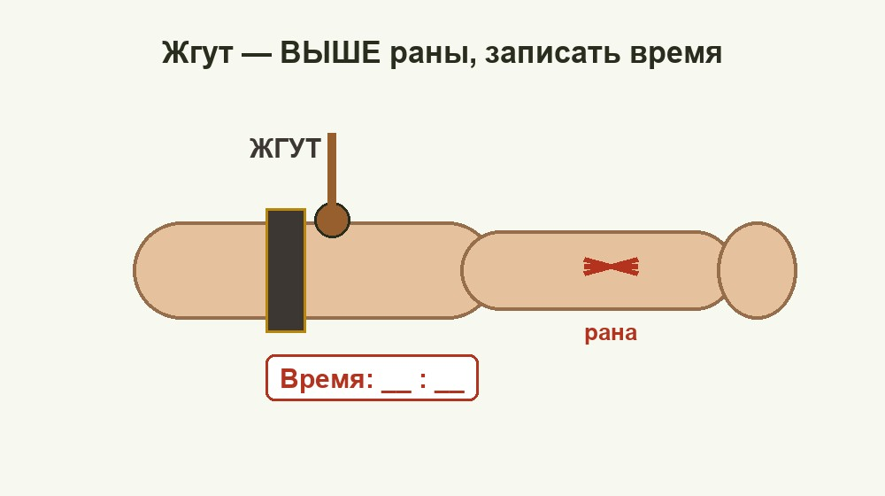

Медициналық дайындық Medical Training Медицинская подготовка
Қан кету түрлерін ажырату және оны тез әрі дұрыс тоқтату — өмірді сақтайды. Recognise the type of bleeding and stop it fast and correctly — it saves lives. Распознать вид кровотечения и быстро, правильно его остановить — спасает жизнь.

Қан кету — зақымдалған қан тамырларынан қанның сыртқа немесе дене қуысына ағуы. Ересек адамда айналымдағы қан көлемі шамамен 4,5–5 литр. Жалпы көлемнің 30%-дан астамын (≈1,5–2 л) тез жоғалту өмірге қауіпті: қан қысымы күрт төмендеп, геморрагиялық шок басталады, көмексіз өлімге әкелуі мүмкін. Сондықтан қанды тез әрі дұрыс тоқтату — алғашқы әрі ең басым әрекет. Bleeding is the escape of blood from damaged vessels, either outward or into a body cavity. An adult has about 4.5–5 litres of circulating blood. Rapidly losing more than 30% of the total (≈1.5–2 L) is life-threatening: blood pressure drops sharply and haemorrhagic shock develops, which can be fatal without help. Stopping the blood fast and correctly is therefore the first and highest-priority action. Кровотечение — истечение крови из повреждённых сосудов наружу или в полость тела. У взрослого в кровотоке около 4,5–5 литров крови. Быстрая потеря более 30% общего объёма (≈1,5–2 л) опасна для жизни: артериальное давление резко падает, развивается геморрагический шок, без помощи возможна гибель. Поэтому быстро и правильно остановить кровь — первое и приоритетное действие.
| ТүріTypeВид | БелгілеріSignsПризнаки | ҚауіптілігіDangerОпасность | КөмекFirst aidПомощь |
|---|---|---|---|
| АртериялықArterialАртериальное | ашық қызыл қан жүрек соғысымен лүпілдеп атқылайдыbright red blood spurts in jets timed to the pulseалая кровь бьёт пульсирующей струёй в такт пульсу | ең қауіпті — минут ішінде өлімге әкеледіmost dangerous — fatal within minutesсамое опасное — смертельно за минуты | жарадан жоғары бұрау; алдын ала артерияны саусақпен басtourniquet above the wound; first apply finger pressure to the arteryжгут выше раны; сначала пальцевое прижатие артерии |
| ВеналықVenousВенозное | қою қызыл (вишня) қан біркелкі, лүпілсіз ағадыdark (cherry-red) blood flows in a steady, non-pulsing streamтёмная (вишнёвая) кровь течёт ровным непульсирующим потоком | мойын венасында ауа эмболиясы қаупі барrisk of air embolism in neck veinsриск воздушной эмболии при ранах шеи | қысым салатын таңғыш, мүшені жүрек деңгейінен жоғары көтеруpressure dressing, raise the limb above heart levelдавящая повязка, приподнять конечность выше сердца |
| КапиллярлықCapillaryКапиллярное | бүкіл жара бетінен сорғалап шығадыoozes from the whole wound surfaceсочится со всей поверхности раны | әдетте қауіпсіз, өздігінен тоқтайдыusually safe, stops on its ownобычно неопасно, останавливается само | таза таңғыш, антисептикclean dressing, antisepticчистая повязка, антисептик |
| Ішкі (паренхиматозды)InternalВнутреннее | бозару, әлсіздік, бас айналу, жиі әлсіз тамыр соғуы, шөлдеуpallor, weakness, dizziness, rapid weak pulse, thirstбледность, слабость, головокружение, частый слабый пульс, жажда | сырттан көрінбейді — жасырын әрі өте қауіптіnot visible externally — hidden and very dangerousне видно снаружи — скрытое и очень опасное | тыныштық, жарты отырған қалып, суық басу, шұғыл дәрігергеrest, half-sitting position, cold compress, urgent medical careпокой, полусидячее положение, холод, срочно к медикам |
Барлығы уақытша (далалық) тоқтату тәсілдері — мақсаты қан жоғалтуды дереу шектеу. Түпкілікті тоқтату ауруханада жасалады. All of these are temporary (field) methods — their goal is to limit blood loss immediately. Definitive control is achieved in hospital. Все они — временные (полевые) способы; их цель — немедленно ограничить кровопотерю. Окончательная остановка выполняется в стационаре.
Артерияны саусақпен басуFinger pressure on the arteryПальцевое прижатие артерии
артерияны сүйекке қарай басу — лезде, бұраудың алдындаpress the artery against the bone — instant, before the tourniquetприжать артерию к кости — мгновенно, до жгута
Мүшені барынша бүгуMaximum flexion of the limbМаксимальное сгибание конечности
буынды бүгіп, валикпен бекітуbend the joint over a pad and fix itсогнуть сустав на валик и зафиксировать
Қысым салатын таңғышPressure dressingДавящая повязка
веналық және капиллярлық қан кетугеfor venous and capillary bleedingпри венозном и капиллярном кровотечении
Бұрау / бұраушықTourniquet / twistЖгут / закрутка
тек артериялық қан кетуге, ең соңғы шараarterial bleeding only, the last resortтолько при артериальном, крайняя мера
Жараны тампондауWound packingТампонада раны
бұрау салынбайтын тереңдеу жараларғаfor deep wounds where a tourniquet cannot be usedдля глубоких ран, где жгут не наложить
Суық басуCold applicationХолод на рану
тамырды тарылтады, ісінуді азайтадыnarrows vessels, reduces swellingсужает сосуды, уменьшает отёк
| ҚатеMistakeОшибка | Неге қауіптіWhy it is dangerousЧем опасно |
|---|---|
| Жалаң денеге, төсемсіз салуOn bare skin, without a padНа голое тело без прокладки | теріні қыспалап зақымдайды, некроз тудырадыpinches and injures the skin, causes necrosisущемляет и травмирует кожу, ведёт к некрозу |
| Уақыт жазбасының болмауыNo time noteНет записки времени | артық ұсталып, мүше өледі (гангрена)left on too long — the limb dies (gangrene)передержат — омертвение конечности (гангрена) |
| Веналық қан кетуге бұрау салуTourniquet on venous bleedingЖгут при венозном кровотечении | негізсіз — қысым таңғышы жеткіліктіunjustified — a pressure dressing is enoughнеоправданно — достаточно давящей повязки |
| Тым әлсіз тартуApplied too looselyСлишком слабое затягивание | артерияны жаппай, тек венаны қысады — қан кетуді күшейтедіdoes not block the artery, only the vein — worsens bleedingне пережимает артерию, только вену — усиливает кровотечение |
| Жараға дәл үстінен салуPlaced directly over the woundНаложен прямо на рану | тіндерді жаныштап, көмекті қиындатадыcrushes tissue and hinders treatmentразмозжает ткани и затрудняет помощь |